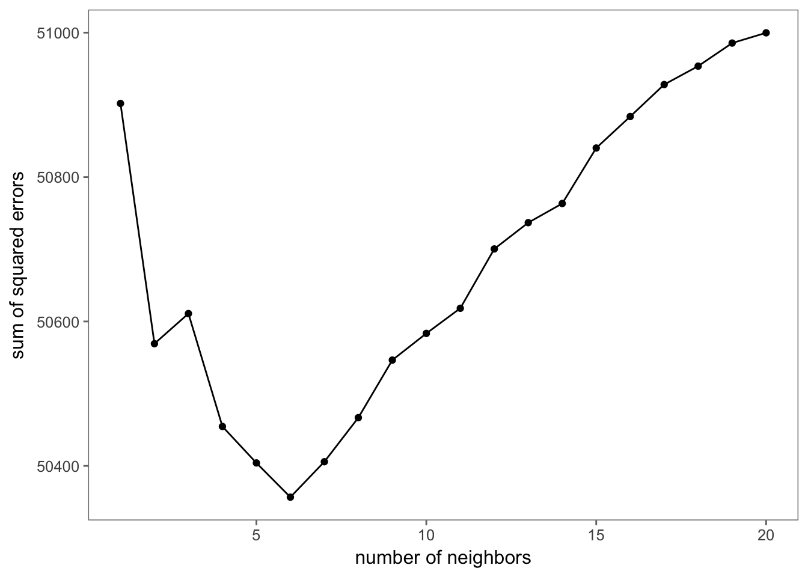
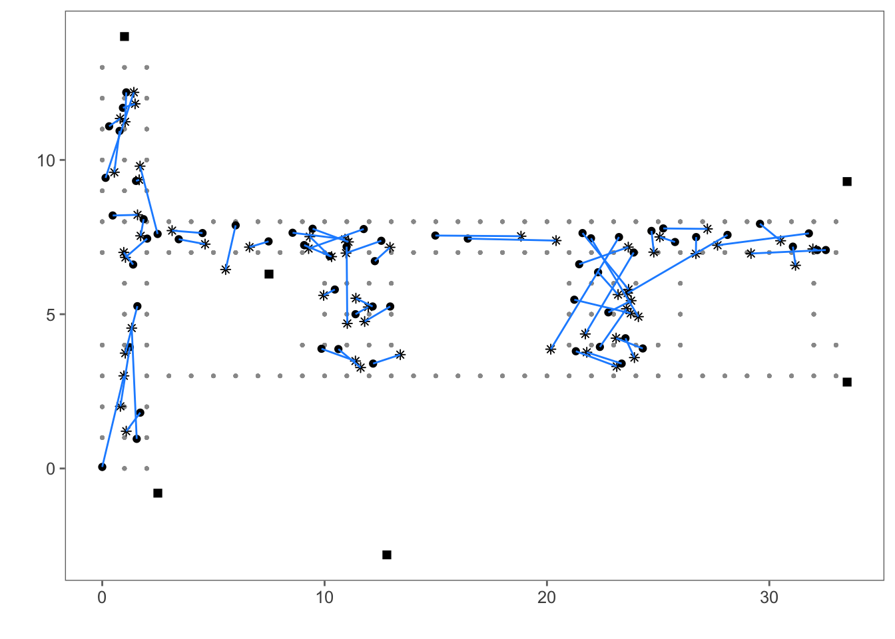

5 Nearest Neighbor Methods to Predict Location
There are numerous different statistical techniques we can use to estimate the location of a device from the strength of the signal detected between the device and several access points. Here, we use a relatively simple and intuitive approach, called \(k\)-nearest neighbors or \(k\)-NN for short. The idea behind the nearest neighbor method (for \(k = 1\)) is as follows: we have training data where the signal is measured to several access points from known positions throughout a building; when we get a new observation, i.e., a new set of signal strengths for an unknown location, we find the observation in our training data that is closest to this new observation. By close we mean the signals recorded between the access points and the new, unobserved location are close to the signal strengths measured between the access points and an observation in the training data. Then, we simply predict the position of the new observation as the position of that closest training observation. For \(k\)-nearest neighbors where \(k\) is larger than 1, we find the \(k\) closest training points (in the signal strength domain) and estimate the new observation’s position by an aggregate of the positions of the \(k\) training points.
We naturally think of measuring the distance between two sets of signal strengths with Euclidean distance, i.e.,
\[ \sqrt{(S_1^* - S_1)^2 + \cdots + (S_6^* - S_6)^2}, \]
where \(S_i\) is the signal strength measured between the handheld device and the \(i\)-th access point for a training observation taken at some specified location, and \(S_i^∗\) is the signal measured between the same access point and our new point whose \((x,y)\) values we are trying to predict.
5.1 Preparing the test data
The online data are in online.final.trace.txt, and these observations form our test data. We use the read_data() function from Chapter 3 to process the raw data with
macs <- unique(offline_summary$mac)
online <- read_data('online.final.trace.txt', subMacs = macs)We have the locations where these test measurements were taken so that we can assess the accuracy of our predictions.
identical(online %>% count(posX, posY, angle) %>% .$n,
online %>% count(posX, posY) %>% .$n)## [1] TRUEThis output indicates that signal strengths were recorded at one orientation for each location.
Given that we are computing distances between vectors of 6 signal strengths, it may be helpful to organize the data in a different structure than we have used so far in this chapter. Specifically, rather than a data frame with one column of signal strengths from all access points, let’s organize the data so that we have 6 columns of signal strengths, i.e., one for each of the access points. We summarize the online data into this format, providing the average signal strength at each location as follows:
online_summary <- online %>%
group_by(posX, posY, angle, mac) %>%
summarise(avg_ss = mean(signal)) %>%
spread(mac, avg_ss) %>%
ungroup()We have kept in the data frame only those variables that we use for making and assessing predictions. This new data frame should have 60 rows and 9 variables, including 6 average signal strengths at the corresponding MAC addresses. We confirm this with:
dim(online_summary)## [1] 60 9names(online_summary)## [1] "posX" "posY" "angle"
## [4] "00:0f:a3:39:e1:c0" "00:14:bf:3b:c7:c6" "00:14:bf:b1:97:81"
## [7] "00:14:bf:b1:97:8a" "00:14:bf:b1:97:8d" "00:14:bf:b1:97:90"To ensure the data is in a consistent format, we extract these steps into a function:
prepare_data <- function(data) {
data %>%
group_by(posX, posY, angle, mac) %>%
summarise(avg_ss = mean(signal)) %>%
spread(mac, avg_ss) %>%
ungroup()
}And we use it on both the offline and online data.
offline <- offline %>% filter(mac != top_macs[2])
train <- prepare_data(offline)
test <- prepare_data(online)5.2 Choice of Orientation
In our nearest neighbor model, we want to find records in our offline data, i.e., our training set, that have similar orientations to our new observation because we saw in Chapter 3 that orientation can impact the strength of the signal. To do this, we might consider using all records with an orientation that is within a specified range of the new point’s orientation. Since the observations were recorded in 45 degree increments, we can simply specify the number of neighboring angles to include from the training data. For example, if we want only one orientation then we only include training data with angles that match the rounded orientation value of the new observation. If we want two orientations then we pick those two multiples of 45 degrees that flank the new observation’s orientation; for three, we choose the closest 45 degree increment and one on either side of it, and so on. That is, for m the number of angles and angleNewObs the angle of the new observation, we find the angles to include from our training data as follows:
new_angle <- 130
m <- 3
refs <- seq(0, by = 45, length = 8)
nearest_angle <- round_orientation(new_angle)
if (m %% 2) {
angles <- seq(-45 * (m-1)/2, 45 * (m-1)/2, length = m)
} else {
angles <- seq(-45 * (m/2 - 1), 45 * m/2, length = m)
}Notice that we handle the case of m odd and even separately. Also, we must map the angles to values in refs, e.g., -45 maps to 315 and 405 maps to 45, so we adjust angles with
angles <- (angles + nearest_angle) %% 360After we have the subset of the desired angles, we select the observations from offline_summary to analyze with
offline_subset <- offline_summary %>% filter(angle %in% angles)Then we aggregate the signal strengths from these angles and create a data structure that is similar to that of online_summary. Rather than repeat the code again, we turn these computations into a helper function, which we call select_train():
select_train <- function(new_angle, data, m) {
refs <- seq(0, by = 45, length = 8)
nearest_angle <- round_orientation(new_angle)
if (m %% 2) {
angles <- seq(-45 * (m-1)/2, 45 * (m-1)/2, length = m)
} else {
angles <- seq(-45 * (m/2 - 1), 45 * m/2, length = m)
}
angles <- (angles + nearest_angle) %% 360
data %>%
filter(angle %in% angles) %>%
ungroup()
}This function has 3 parameters: angleNewObs, the angle of the new observation; signals, the training data, i.e., data in the format of offline_summary; and m, the number of angles to include from signals. The function returns a data frame that matches offline_subset from above.
We can test our function for an angle of 130 degrees and m of 3, i.e., we aggregate the offline data for angles of 90, 135, and 180. We do this with
train130 <- select_train(130, train, m = 3)The results, slightly reformatted for readability, are:
## # A tibble: 498 x 9
## posX posY angle `:c0` `:c6` `:81` `:8a` `:8d` `:90`
## <dbl> <dbl> <fctr> <dbl> <dbl> <dbl> <dbl> <dbl> <dbl>
## 1 0 0 90 -51 -63 -64 -34 -63 -55
## 2 0 0 135 -52 -67 -63 -39 -64 -54
## 3 0 0 180 -55 -68 -62 -34 -66 -56
## 4 0 1 90 -55 -66 -64 -40 -64 -60
## 5 0 1 135 -54 -66 -64 -41 -65 -58
## 6 0 1 180 -50 -64 -63 -37 -68 -59
## 7 0 2 90 -54 -61 -61 -46 -58 -51
## 8 0 2 135 -56 -62 -65 -39 -61 -50
## 9 0 2 180 -54 -60 -61 -48 -61 -57
## 10 0 3 90 -58 -61 -56 -41 -65 -51
## # ... with 488 more rowsThe select_train() function returns a set of \(m\)×166 signals for each access point.
nrow(train130) / m## [1] 1665.3 Finding the Nearest Neighbors
At this point, we have a set of training data that we can use to predict the location of our new point. We want to look at the distance in terms of signal strengths from these training data to the new point. Whether we want the nearest neighbor or the 3 nearest neighbors, we need to calculate the distance from the new point to all observations in the training set. We can do this with the closest_pts() function:
closest_pts <- function(train, testvec, k) {
train %>%
gather(mac, signal, -(1:2)) %>%
group_by(posX, posY) %>%
mutate(diff = signal - testvec) %>%
summarise(dist = sum(diff*diff)) %>%
arrange(dist) %>%
head(k) %>%
# select(posX, posY) %>%
ungroup()
}The parameters to this function are the training data and a numeric vector of 6 new signal strengths. Our function returns a data frame containing the locations of the \(k\) nearest training observations in order of closeness to the new observation’s signal strength, as well as the value of that distance.
We can use some subset of these ordered locations to estimate the location of the new observation. That is, for some value \(k\) of nearest neighbors, we can simply average the first \(k\) locations. For example, if neighbors contains the \(x\) and \(y\) values returned from closest_pts() (these are the ordered training locations), then we estimate the location of the new observation with the function avg_neighbors().
avg_neighbors <- function(neighbors) {
neighbors %>% summarise_at(vars(posX:posY), mean)
}Of course, we need not take simple averages. For example, we can use weights in the average that are inversely proportional to the distance (in signal strength) from the test observation. In this case, we also need to return the distance values from the closest_pts() function. This alternative approach allows us to include the \(k\) points that are close, but to differentiate between them by how close they actually are from the new observation’s signals. The weights might be
\[ \frac{1/d_i}{\sum^k_{i=1} 1/d_i}, \]
for the \(i\)-th closest neighboring observation where \(d_i\) is the distance from our new point to that nearest reference point (in signal strength space). This might look something like the function weighted_avg_neighbors().
weighted_avg_neighbors <- function(neighbors) {
neighbors %>%
mutate(wtdX = posX * (1/dist) / sum(1/dist),
wtdY = posY * (1/dist) / sum(1/dist)) %>%
summarise(posX = sum(wtdX), posY = sum(wtdY))
}We may also want to consider different metrics. We have used Euclidean distance, but we may want to try Manhattan distance. We might also be inclined to use medians and not averages when combining neighbors to predict \((x,y)\), if the distribution of the values we are averaging are quite skewed.
We have developed two functions, train_select() and closest_pts(), to provide the locations in the training data that have signal strengths close to those of a test observation. We can formalize this approach to make predictions for all of our test data. We do this with my_knn() as follows:
my_knn <- function(train, test, m = 1, k = 3) {
pred_xy <- list()
for (i in 1:nrow(test)) {
testvec <- test[i, ] %>%
select(starts_with('00:')) %>%
unlist()
train_ss <- select_train(as.numeric(as.character(test$angle[i])), train, m) %>%
group_by(posX, posY) %>%
summarise_at(-1, mean)
neighbors <- closest_pts(train_ss, testvec, k)
pred_xy[[i]] <- weighted_avg_neighbors(neighbors)
}
bind_rows(pred_xy)
}We test our functions with the case of 3 nearest neighbors and 3 orientations with:
est_xy_k3 <- my_knn(train, test, m = 3, k = 3)To assess the fit of the model we can make a map of the actual and predicted locations. Figure 5.1 shows such a map for this model and the 1-NN model. Notice that in general the errors are smaller for 3-NN. Also in the 3-NN model, the large errors seem less problematic as they tend to follow the hallways.
Figure 5.1: Floor Plan with Predicted and Actual Locations. The red line segments shown in the floor plan connect the test locations (black dots) to their predicted locations (asterisks). The top plot shows the predictions for \(k = 1\) and the bottom plot is for \(k = 3\) nearest neighbors. In this model, we use as training data the average signal strengths from each of the 166 offline locations (grey dots) to the 6 access points (black squares) for the 3 closest angles to the angle at which the test data was measured.
![Floor Plan with Predicted and Actual Locations. The red line segments shown in the floor plan connect the test locations (black dots) to their predicted locations (asterisks). The top plot shows the predictions for $k = 1$ and the bottom plot is for $k = 3$ nearest neighbors. In this model, we use as training data the average signal strengths from each of the 166 offline locations (grey dots) to the 6 access points (black squares) for the 3 closest angles to the angle at which the test data was measured.](_main_files/figure-html/predictions-1.png)
![Floor Plan with Predicted and Actual Locations. The red line segments shown in the floor plan connect the test locations (black dots) to their predicted locations (asterisks). The top plot shows the predictions for $k = 1$ and the bottom plot is for $k = 3$ nearest neighbors. In this model, we use as training data the average signal strengths from each of the 166 offline locations (grey dots) to the 6 access points (black squares) for the 3 closest angles to the angle at which the test data was measured.](_main_files/figure-html/predictions-2.png)
In addition to the visual comparison of the predicted and actual positions, we can compare these fits numerically. For example, we can compute the length of the line segments in each of the figures and sum them to yield a measure of the size of the error. Or, we can find the sum of squared errors with
calc_error <- function(estXY, actualXY) {
sum(rowSums((estXY - actualXY)^2))
}We apply this function to our two sets of errors to find:
actualXY <- test %>% select(posX, posY)
map_dbl(list(est_xy_k1, est_xy_k3), calc_error, actualXY)## [1] 622.8803 315.9173This confirms what we saw in the figures, that 3 nearest neighbors do a better job of predicting location than one nearest neighbor. The question remains whether some other value of \(k\) makes a better predictor.
5.4 Cross-Validation and Choice of \(k\)
The choice of \(k\), the number of neighbors to include in the estimate of a new observation’s position, is a model selection problem. Ideally, we want to choose the value of \(k\) independent of our test data so that we do not overfit our model to the training data. The method of \(v\)-fold cross-validation can help us do this. The idea behind it is quite simple: we divide our training data into \(v\) non-overlapping subsets of equal size. Then for each subset, we build models with the data that are not in that subset and we assess the predictive ability of the model using the subset that was left out. We repeat this model fitting and assessment for each of the \(v\) folds and aggregate the prediction errors across the folds.
In our nearest neighbor scenario, we use all 8 orientations and 6 MAC addresses with each location. This means that we cross-validate on the 166 locations. Suppose that we take \(v = 11\); then each fold has floor(166/v), or 15, locations. We can randomly select these locations with
v <- 11
permute_locs <- train %>%
select(posX, posY) %>%
unique() %>%
nrow() %>%
sample()
permute_locs <- matrix(permute_locs, ncol = v, nrow = floor(length(permute_locs) / v))## Warning in matrix(permute_locs, ncol = v, nrow =
## floor(length(permute_locs)/v)): data length [166] is not a sub-multiple or
## multiple of the number of rows [15]We receive a warning message with the call to matrix() because \(v\) does not divide evenly into 166, so permute_locs does not contain all 166 locations. Each subset of 15 locations is used as the “online” or test data so, e.g., the first online fold is
online_fold <- train[permute_locs[ ,1], ]We need to summarize these data so that the data structure matches that of online_summary. This includes selecting an orientation at random because each test observation has only one orientation. (Of course, we could find the nearest neighbors for each of the 8 orientations, but we keep things a bit simpler).
Recall from Section 5.1 that we summarized the online data into a structure that had 6 columns of signal strength values, one for each access point. It is easier for us to create the test data in its entirety from offline and then divide this data structure into its folds. We can use our function reshape_ss() to do this. However, there is one important difference – we want to select one angle at random for each location. We can augment prepare_data() to conditionally perform this selection, e.g.,
prepare_data <- function(data, sample_angle = FALSE) {
df <- data %>%
group_by(posX, posY, angle, mac) %>%
summarise(avg_ss = mean(signal)) %>%
spread(mac, avg_ss) %>%
ungroup()
if (sample_angle) {
df <- df %>%
group_by(posX, posY) %>%
sample_n(1) %>%
ungroup()
}
df
}After we incorporate this code into prepare_data() and augment the function definition to include sample_angle with a default value of FALSE, then we can summarize and format offline with
test_cv <- prepare_data(offline, sample_angle = TRUE)Now, our first fold is:
online_fold <- test_cv[permute_locs[ ,1], ]This structure makes it easier to use our previous code to find the nearest neighbors. Our training data for the first fold is
offline_fold <- train[permute_locs[ ,-1], ]This subset is also in the correct format for our earlier application of the nearest neighbor method. That is, we can use our my_knn() function with these cross-validated versions of the online and offline data as follows:
est_fold <- my_knn(offline_fold, online_fold, m = 3, k = 3)Then we find the error in our estimates with
actual_fold <- online_fold %>% select(posX, posY)
calc_error(est_fold, actual_fold)## [1] 5278.553For each fold, we want to find the \(k\)-NN estimates for \(k = 1, 2, \dots, K\), for some suitably large \(K\). And, we want to aggregate the errors over the \(v\) folds. We begin simply by wrapping our code from above in loops over the folds and the number of neighbors. We do this as follows, for \(K = 20\):
K <- 20
err <- rep(0, K)
for (j in 1:v) {
online_fold <- test_cv[permute_locs[ ,j], ]
offline_fold <- train[permute_locs[ ,-j], ]
actual_fold <- online_fold %>% select(posX, posY)
for (k in 1:K) {
est_fold <- my_knn(offline_fold, online_fold, m = 3, k = k)
err[k] <- err[k] + calc_error(est_fold, actual_fold)
}
}Figure 5.2 shows the sum of squared errors as a function of \(k\). We see that the errors decrease quite a lot at first, e.g., for \(k = 1, \dots, 7\); then the errors begin to increase slowly because the neighbors become too spread out geographically.
ggplot(data_frame(k = 1:K, err = err), aes(k, err)) +
geom_point() +
geom_line() +
labs(x = 'number of neighbors', y = 'sum of squared errors')Figure 5.2: Cross Validated Selection of \(k\). This line plot shows the sum of square errors as a function of the number of neighbors used in predicting the location of a new observation. The sums of squared errors are obtained via cross-validation of the offline data.
We use the value of 7 for the nearest neighbors that we obtained from cross-validation, and we apply it to our original training and test data, i.e.,
est_xy_k6 <- my_knn(train, test, m = 3, k = 6)Then we tally the errors in our predictions with
calc_error(est_xy_k6, actualXY)## [1] 261.1878The earlier values for \(k = 1\) and \(k = 3\) were 622 and 315, respectively. The choice of \(k = 6\) may not be the minimizing value for our online data because this value was chosen without reference to the online data. This is the reason we use cross-validation, i.e., we do not use the online data in both the selection of \(k\) and the assessment of the predictions.
plot_locations(est_xy_k6)